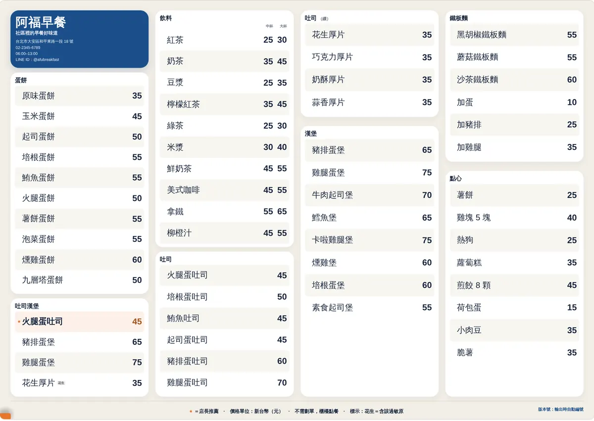
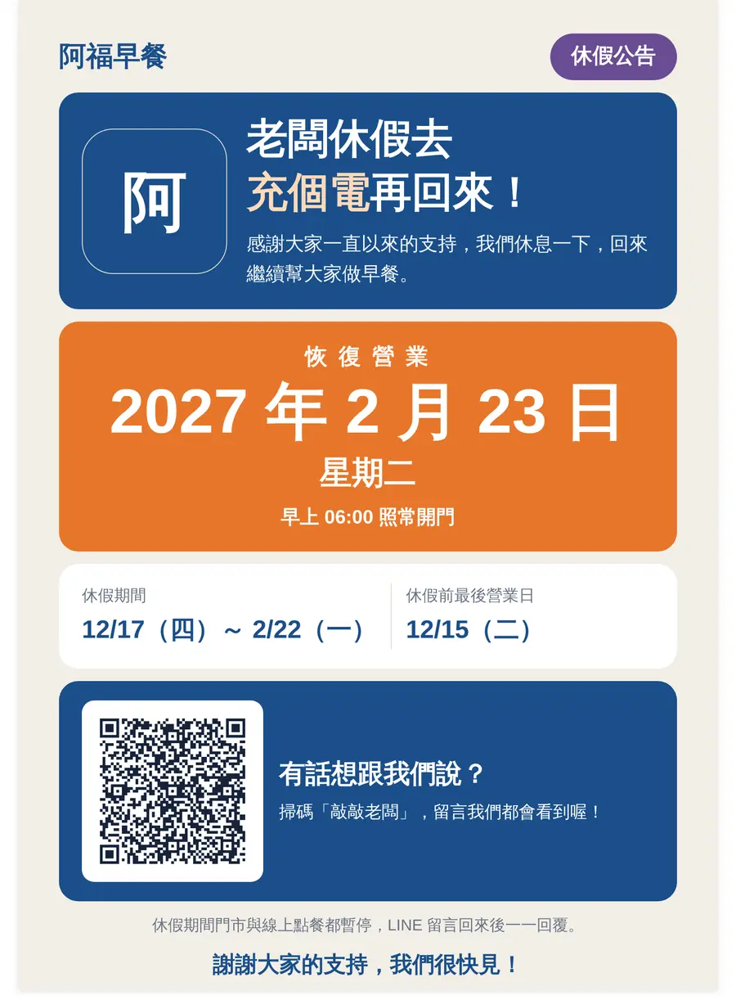
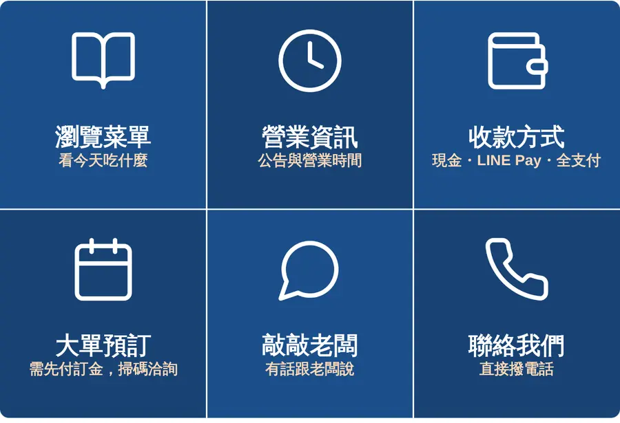

首頁 ／ 行銷管理
MARKETING
行銷管理
改一次價格，菜單、海報、QR 一起更新
- 改兩個價格，就要找人重排一張 A3 菜單？
- 牆上的菜單、桌上的 QR、外送平台價格不一樣，客人來問才發現？
- 公休、活動要做海報，每次都要開電腦、找範本？
- 想做名片、LINE 圖文選單，卻不知道尺寸怎麼抓？
適合你，如果你是：常常調價、會印紙本菜單或在 LINE 經營熟客的店。
下面每個功能都先說以前的麻煩，再看系統怎麼解決；手機裡是系統的實際畫面，可以上下滑動。
菜單改價與 A3 排版
- 以前
- 每次調價都要找人改檔、重排版、重印，小改也要等好幾天。
- 現在
- 在手機上改價格，A3 菜單自動重新排版成 PDF；品項多時可分成兩頁，自己勾選每頁放哪些分類。
- 你省下的
- 改價當天就能印出新菜單；調價助手可以整批漲價或降價。品項多寡都會自動排滿整頁。


顧客電子菜單
- 以前
- 客人問「這個有沒有蛋」「有沒有素的」，忙的時候很難一個一個回答。
- 現在
- 客人掃桌上的 QR 看到最新菜單，還能自己篩選過敏原和素食；你一改價，這裡馬上更新。
- 你省下的
- 價格永遠是最新的，客人自己就能找到能吃的品項。

公告海報
- 以前
- 要公休、辦活動，就得開電腦找範本做海報，再另外發到 LINE。
- 現在
- 選公告類別、填幾個字，就產生可以印的海報；勾一下也會同時顯示在顧客首頁。
- 你省下的
- 手機上幾分鐘做好公告，門口和線上同步。


LINE 圖文選單
- 以前
- LINE 官方帳號的圖文選單尺寸很多種，自己做常常被裁切或模糊。
- 現在
- 選格數、填每個按鈕要連到哪裡，系統產生符合 LINE 規格的圖片。
- 你省下的
- 不用學修圖，客人在 LINE 一點就能看菜單、預訂、留言。


桌號 QR 海報
- 以前
- 桌上的 QR 連到舊菜單或舊網址，換了也不知道要重印哪幾張。
- 現在
- 每一桌產生一張 QR 海報，連結固定指向你的顧客頁，菜單更新不用重印。
- 你省下的
- 印一次就好，菜單改了 QR 不用換。

Wi-Fi 卡
- 以前
- 客人一直問 Wi-Fi 密碼，還要一個字一個字念給他聽。
- 現在
- 填網路名稱和密碼，產生客人掃碼就能連上的卡片。
- 你省下的
- 不用再念密碼。

名片
- 以前
- 印名片要自己排版、確認尺寸，改了電話又要重做。
- 現在
- 依店家資料自動產生 90×54mm 名片，含 LINE 官方帳號 QR，可以直接送印。
- 你省下的
- 店家資料改了，名片跟著更新。

社群貼文生成器開發中
完成後放上實際畫面